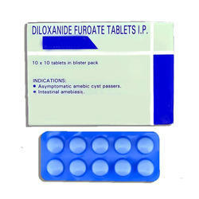

Amoebicides

Amoebicides (ကပ်ပါးပိုးသတ်ဆေး) ဆိုတာဘာလဲ
Amoebicides ဆိုတာ amoebozoa (အမီဘိုဇိုးအား) ကပ်ပါးပိုးကြောင့်ဖြစ်သော ဝမ်းကိုက်ရောဂါများ ကုသရာတွင် သုံးသောဆေးများကို ခေါ်ခြင်း ဖြစ်ပါသည်။
Amoebicides တွေကို ဘယ်လိုခွဲထားလဲ
အူကပ်ပါးပိုးသတ်ဆေးနှင့် တစ်သျှုး ကပ်ပါးပိုးသတ်ဆေးဆိုပြီး နှစ်အုပ်စု ခွဲထားပါသည်။
အူကပ်ပါး ပိုးသတ်ဆေးများ အုပ်စုမှာ ဘာဆေးတွေပါလဲ
- Diloxanide furoate, Iodoquinol, Clioquonol တို့နှင့် ပိုးသတ်ဆေးအုပ်စုဝင် Paromomycin, Erythromycin နှင့် Tetracycline တို့ ပါဝင်ပါသည်။
တစ်သျှုးကပ်ပါး ပိုးသတ်ဆေးအုပ်စုမှာရော ဘာဆေးတွေပါလဲ
- Nitroimidazole အုပ်စုဝင်ဆေးများဖြစ်သော လူသိများတဲ့ Metronidazole, Tinidazole, Ornidazole, Secnidazole တို့အပြင် Emetine, Dehydroemetine နှင့် Chloroquine တို့ ပါဝင်သည်။
ကပ်ပါးပိုးသတ်ဆေးတွေကို ဘယ်မှာသုံးလဲ
- အူကပ်ပါးပိုးသတ်ဆေးများကို အဓိက အားဖြင့် ရောဂါလက္ခဏာ မပြဘဲ ကပ်ပါးပိုးဥကျဆင်းသူများနှင့် အပျော့စား အူလမ်းကြောင်းပိုးဝင်ခြင်းတို့မှာ သုံးလေ့ရှိပြီး တစ်သျှုးကပ်ပါးပိုးသတ်ဆေးများ အနက် Metronidazole အား ကပ်ပါးပိုးများ ကြောင့်ဖြစ်သော ဝမ်းကိုက်ခြင်နှင့်အခြာသော ရောဂါ များအခြေအနေများ တွင်သုံးလေ့ရှိပါသည်။ ထို့အပြင် Metronidazole အား ဆီးလမ်းကြောင်းကပ်ပါးပိုးဝင်ခြင်း၊ သွားဖုံးရောင်၊ ပါးပေါက်နာ၊ အမြှေးပါးတုဖြစ်ပြီး အူရောင်ခြင်း၊ Trichomonas နှင့် Gardnerella တို့ကြောင့် မိန်းမကိုယ်ရောင်ရမ်းခြင်းများမှာလည်း သုံးလေ့ရှိပါသည်။
- Emetine ကိုမူ ဆိုးရွားသောရောဂါအခြေအနေများကို ထိန်းချုပ်ရန်သုံးပြီး Chloroquine ကိုမူ Metronidazole အားယဉ်ပါးသော အခြေအနေများနှင့် အသည်းကပ်ပါးပိုး ဝင်ခြင်းတို့ကို ကုသရာတွင် သုံးလေ့ရှိပါသည်။
ဆိုးကျိုး ဘာတွေရှိလဲ
- အများအားဖြင့် ဗိုက်ပွ၊ မအီမသာဖြစ်ခြင်း၊ ပျို့အန်ခြင်း၊ ဝမ်လျှောခြင်း၊ အရေပြားယားယံခြင်း၊ အင်ပြင်ထခြင်း ၊ ဗိုက်အောင့်ခြင်း တို့ဖြစ်တတ်ပါတယ်။
- Iodoquinol ဆေးမှာ တိုင်းရွိတ်ဂလင်းကြီးခြင်း၊ အမြင်ဝေဝါးခြင်းတို့ဖြစ်တတ်ပြီး Metronidazole မှာလျှာခါးခြင်း၊ ဆီးအရောင်ရင့်ခြင်း၊ လျှာထူခြင်း၊ ကျီးကန်းပါးစပ်ဖြစ်ခြင်း ၊ ခေါင်းမူး ခေါင်းကိုက်၊ ချာချာလည်အောင်မူးခြင်း တို့ဖြစ်တတ်ပါတယ်။ အဆိုပါ ဆိုးကျိုးများဖြစ်ပါက နီးစပ်ရာဆေးခန်းသို့ သွားရောက်ကုသသင့်ပါတယ်။
မသောက်ခင် ဘာတွေ သတိထားရမလဲ
- အထူးသတိပြုရန်မှာ Metronidazole သည် အရက်နှင့် သောက်မိလျှင် Disulfiram like reaction ဟုခေါ်သော ပြင်းထန်စွာ ဓါတ်ပြုမှုဖြစ်နိုင်သဖြင့် ဆေးမသောက်ခင် ၂၄ နာရီ နှင့် ဆေးသောက်ပြီး ၄၈ နာရီအထိ အရက်မသောက်သင့်ပါ။
- ဆေးမတည့်ခြင်း၊ အသည်းရောဂါ ရှိ/မရှိ ဆရာဝန်အား ကြိုပြော သင့်ပါသည်။
- ကိုယ်ဝန်ဆောင်များနှင့် နို့တိုက်မိခင်များသည် အန္တရာယ်ရှိနိုင်သဖြင့် ဆရာဝန်နှင့်တိုင်ပင်ပြီးမှ သောက်သုံးသင့်ပါသည်။
ဆေးဓါတ်ပြုမှုဘာတွေရှိလဲ
- စွဲသောက်နေသောဆေး/တိုင်းရင်းဆေးရှိ/မရှိ ကြိုပြောသင့်ပါသည်။
- Phenobarbitone, Phenytoin, Prednisone နှင့် Rifampicin တို့မှာ အချို့သော ကပ်ပါး ပိုးသတ်ဆေးများ (ဥပမာ Metronidazole) ၏ အာနိသင်ကို ပြောင်းစေသောကြောင့် ဆရာဝန်၏ ညွှန်ကြားချက်ဖြင့်သာ သောက်သုံးသင့်ပါသည်။
ဆေးသောက်လွန်လျှင် ဘာဖြစ်နိုင်သလဲ
ဘေးထွက်ဆိုးကျိုးများ ပိုဆိုးနိုင်ကာ အန္တရာယ်ရှိသဖြင့် ဆေးသောက် လွန်လျှင် ဆရာဝန်အား အမြန်ဆုံးပြသင့်ပါတယ်။
Source-အိမ့်ချယ်ရီ